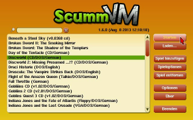
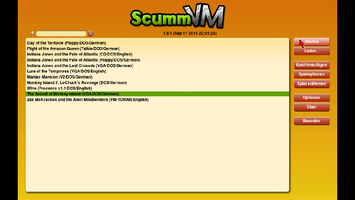
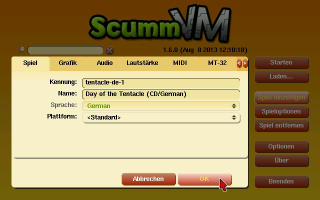
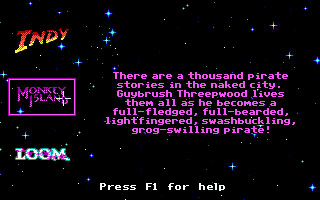
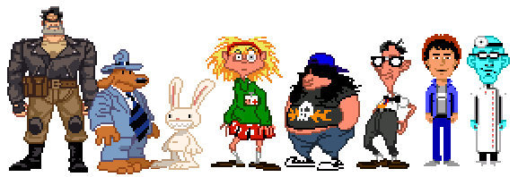
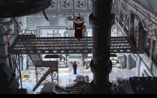
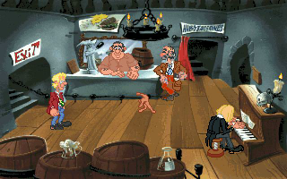
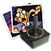
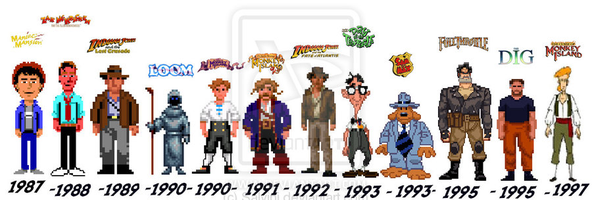
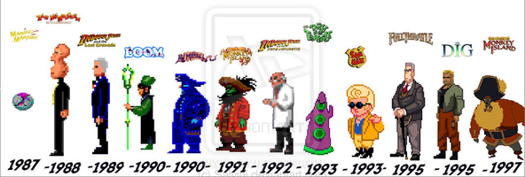

ScummVM
Dieser Artikel wurde für die folgenden Ubuntu-Versionen getestet:
Ubuntu 16.04 Xenial Xerus
Ubuntu 14.04 Trusty Tahr
Zum Verständnis dieses Artikels sind folgende Seiten hilfreich:
ScummVM 
 (Script Creation Utility for Maniac Mansion Virtual Machine) ist eine Sammlung von Interpretern für zahlreiche Adventure-Game-Engines. Fast alle der früheren LucasArts Spiele wurden mit der Skriptsprache SCUMM erstellt (Ausnahmen sind Grim Fandango und Monkey Island 4), welche beim Ausführen von einer entsprechenden Runtime-Engine interpretiert wurden. Dadurch war es sehr leicht möglich, weitere Plattformen zu unterstützen, da nur der SCUMM-Interpreter an das jeweilige Betriebssystem angepasst werden musste. Das tatsächliche Spiel konnte durch diese Methode unverändert übernommen werden. ScummVM startete als freie Neuimplementierung des SCUMM-Interpreters, unterstützt jedoch inzwischen auch viele nicht-SCUMM-Adventures (siehe Liste der Spiele) und ist auf vielen Plattformen (u.a. Ubuntu Touch) lauffähig.
(Script Creation Utility for Maniac Mansion Virtual Machine) ist eine Sammlung von Interpretern für zahlreiche Adventure-Game-Engines. Fast alle der früheren LucasArts Spiele wurden mit der Skriptsprache SCUMM erstellt (Ausnahmen sind Grim Fandango und Monkey Island 4), welche beim Ausführen von einer entsprechenden Runtime-Engine interpretiert wurden. Dadurch war es sehr leicht möglich, weitere Plattformen zu unterstützen, da nur der SCUMM-Interpreter an das jeweilige Betriebssystem angepasst werden musste. Das tatsächliche Spiel konnte durch diese Methode unverändert übernommen werden. ScummVM startete als freie Neuimplementierung des SCUMM-Interpreters, unterstützt jedoch inzwischen auch viele nicht-SCUMM-Adventures (siehe Liste der Spiele) und ist auf vielen Plattformen (u.a. Ubuntu Touch) lauffähig.
GrimE-basierte Adventures, wie Grim Fandango, sind mit dem Schwesterprojekt ResidualVM spielbar.
Mit den ScummVM Tools können Daten aus Spielen extrahiert und Audiodateien komprimiert werden.
|  |  |
| ScummVM | ScummVM unter Ubuntu Touch |
Installation¶
Paketquelle¶
Zur Installation [1] ist folgendes Paket notwendig:
scummvm (universe)
 mit apturl
mit apturl
Paketliste zum Kopieren:
sudo apt-get install scummvm
sudo aptitude install scummvm
Nach erfolgreicher Installation findet man ScummVM
im Gnome-Menü unter "Anwendungen -> Spiele"
in Xfce findet man den Eintrag im
 Anwendungsmenü unter "Spiele"
Anwendungsmenü unter "Spiele"in KDE ist der Eintrag unter "Programme -> Spiele" zu finden
Einzelnes Paket¶
Auf scummvm.org werden neuere Versionen des Programms angeboten. Diese wie gewohnt installieren [6]. Eine eventuell vorhandene Vorgängerversion vorher deinstallieren [1].
Hinweis!
Fremdpakete können das System gefährden.
Selber kompilieren¶
Der Quelltext für die stabile Version findet sich im Downloadbereich der offiziellen Webseite. Der der aktuellen Testversion hingegen wird per Git angeboten und ist hier  zu finden. ScummVM ist unter Ubuntu in der Regel problemlos selbst zu kompilieren. Die nötigen Abhängigkeiten für die allermeisten Funktionen ScummVMs können bequem mit dem zugehörigen Build-Metapaket installiert werden [1]:
zu finden. ScummVM ist unter Ubuntu in der Regel problemlos selbst zu kompilieren. Die nötigen Abhängigkeiten für die allermeisten Funktionen ScummVMs können bequem mit dem zugehörigen Build-Metapaket installiert werden [1]:
sudo apt-get build-dep scummvm
Alternativ kann jedoch Speicherplatz eingespart werden, indem nur die wichtigsten Abhängigkeiten manuell angegeben werden:
nasm
libsdl1.2-dev
libmad0-dev
libasound2-dev
libvorbis-dev
libmpeg2-4-dev
libflac-dev
libz-dev
libfluidsynth-dev
mit apturl
Paketliste zum Kopieren:
sudo apt-get install nasm libsdl1.2-dev libmad0-dev libasound2-dev libvorbis-dev libmpeg2-4-dev libflac-dev libz-dev libfluidsynth-dev
sudo aptitude install nasm libsdl1.2-dev libmad0-dev libasound2-dev libvorbis-dev libmpeg2-4-dev libflac-dev libz-dev libfluidsynth-dev
Anschließend wird auf die übliche Weise kompiliert [3].
Hierbei wird ScummVM mit allen verfügbaren Funktionen gebaut. Beim Kompilieren bietet sich jedoch auch die Möglichkeit, ScummVM zu entschlacken, indem beispielsweise die Unterstützung von Spielen, welche man gar nicht besitzt, außen vorgelassen wird. Mit folgendem Befehl können die möglichen Optionen des Skripts angezeigt werden:
./configure --help
Auf scummvm.org findet sich eine Auflistung darüber, zu welchem Engine welches Spiel gehört.
Adventures aufspielen¶
Als erstes erstellt man einen Spieleordner im eigenen Verzeichnis - z.B. ~/Games/ScummVM - nun wechselt man in diesen und erstellt für jedes zu installierende Spiel einen weiteren Ordner in diesem - z.B. Loom. Hier werden dann alle für das Spiel benötigten Dateien für das Spiel Loom hineinkopiert. Je nachdem, welche Spiele man besitzt, wäre es auch interessant zu wissen welche Dateien von diesem in den auf dem Linuxsystem dafür erstellten Ordner hineinkopiert werden müssen. Dies empfiehlt sich vor allem bei etwas älteren Systemen, denen nicht viel Speicherkapazität zur Verfügung steht. Diese Liste ist hier einzusehen.
Bei den Spielen reicht es in der Regel alle Dateien des Spiels in einen einzelnen Ordner zu kopieren. Je nach Spiel müssen die Dateinamen ggf. noch geändert werden - welche das sind kann man auf der Projektseite ersehen.
|  |
| Einrichtung |
Einrichten¶
Nun wird das Programm zum ersten Mal gestartet! Die Liste ist natürlich noch leer.
Um ein Spiel der Liste hinzuzufügen, wie folgt vorgehen:
"Add Game... -> SPIELEORDNER -> Choose" bzw. "Spiel hinzufügen -> SPIELEORDNER -> Auswählen"
Schon wird das erste Spiel erkannt. In diesem Menüpunkt kann man Korrekturen vornehmen, wenn z.B. die Sprache des Spieles nicht richtig erkannt wurde, oder aber einem der Titel nicht gefällt. Die anderen Optionen werden hier erläutert.
Die Schritte solange wiederholen, bis alle unterstützten Spiele eingerichtet sind.
Die Spiele können nun aus dem Programm heraus gestartet werden.
Mass Add¶
Sofern alle zu installierenden Spiele in einem Ordner, z.B. ~/Games/ScummVM, abgelegt sind kann man durch drücken von ⇧ die Schaltfläche "Mass Add" bzw. "Durchsuchen" zu Tage fördern. Das Programm durchsucht nun das angegebene Verzeichnis nach unterstützten Spielen und übernimmt diese. Die so entstandene Liste noch kontrollieren und fehlerhafte Einträge entfernen.
|  |
| Passport to Adventure (Demos) |
ScummVM : Spiele¶
Unterstützte Spiele¶
Unterstützt werden momentan unter anderem die Spiele:
Baphomets Fluch 1 + 2
Beneath a Steel Sky
Flight of the Amazon Queen
Indiana Jones 3 + 4
Loom
Maniac Mansion 1 + 2
Monkey Island 1 - 3
Police Quest 
Sam and Max
Simon the Sorceror 1 + 2
The Dig
Vollgas
Zak McKracken and the Alien Mindbenders
Alle von ScummVM unterstützten Spiele gibt es im Fachhandel und auf Internet-Vertriebsplattformen zu kaufen oder aber man ersteigert sie, da sie nicht legal zum Download bereit liegen. Ausnahme bilden hier nur die kostenlosen Spiele. Neben einigen wenigen freien Spielen gibt es noch eine Reihe von Fangames.
Demoversionen¶
Demoversionen zu einzelnen Titeln können von scummvm.org heruntergeladen werden.
|  |
| Beneath a Steel Sky |
Freeware¶
Paketquelle¶
Auf ScummVM werden einige Spiele zum kostenlosen Download angeboten. Dies sind unter anderem die Klassiker Beneath a Steel Sky und Flight of The Amazon Queen, welche auch über die Paketquellen installiert [1] werden können:
beneath-a-steel-sky (universe, Beneath a Steel Sky (package: beneath-a-steel-sky))
drascula-german (universe, Drascula: The Vampire Strikes Back)
flight-of-the-amazon-queen (universe, Flight of the Amazon Queen)
lure-of-the-temptress (universe, Lure of the Temptress)
mit apturl
Paketliste zum Kopieren:
sudo apt-get install beneath-a-steel-sky drascula-german flight-of-the-amazon-queen lure-of-the-temptress
sudo aptitude install beneath-a-steel-sky drascula-german flight-of-the-amazon-queen lure-of-the-temptress
Bei der Einrichtung der Spiele unter ScummVM muss das Verzeichnis /usr/share/scummvm/beneath-a-steel-sky bzw. /usr/share/scummvm/flight-of-the-amazon-queen ausgewählt werden. Beneath a Steel Sky enthält eine deutsche Textausgabe und kann in der Sprachkonfiguation entsprechend eingestellt werden. Die bereitgestellte Version von Flight of the Amazon Queen enthält leider keine deutsche Textausgabe. Die deutsche Sprachdatei kann jedoch von dieser Seite heruntergeladen werden. Anschließend entpacken [5] und die Sprachdatei queen.1c in das Spieleverzeichnis von FotAQ kopieren [7].
Download¶
| Freeware | |||
| Titel | Jahr | Publisher | |
| Day of the Tentacle (DOTT) | 1993 | LucasArts | |
| Dragon History | 1995 | NoSense | |
| Dreamweb | 1994 | Empire Interactive Entertainment | |
| Drascula: The Vampire Strikes Back | 1996 | Alcachofa Soft | |
| Lure of the Temptress | 1992 | Revolution Software | |
| Maniac Mansion | 1987 | LucasArts | |
| Mystery House | 1980 | On-Line Systems | |
| Sfinx | 1997 | LK Avalon | |
| Teeanagent / Teenagent | 1995 | Metropolis Software | |
Einige Titel, wie z.B. aus der Serie The Lost Files of Sherlock Holmes, findet man in der Software Library: MS-DOS Games des Internet Archive
Hinweis:
Obwohl Maniac Mansion und Day of the Tentacle auf der Homepage von chip.de als Freeware angeboten werden gilt es den folgenden Hinweis zu beachten: Der Download ist nur dann rechtlich unbedenklich, wenn man den Originaldatenträger erworben hat, dieser aber defekt ist und/oder man das entsprechende Videospielsystem nicht mehr besitzt. Der Titel Maniac Mansion kann aus DOTT heraus an einem Computer als Minispiel gespielt werden. Alternativ ist dieses Spiel im Unterordner maniac zu finden.
|  |
| Drascula |
ScummVM : Feinabstimmung¶
Vollbild (de-)aktivieren¶
Da es für das ein oder andere Spiel sinnvoll ist, ein etwas größeres Bild zu haben aktiviert man den Fullscreen. Dies geschieht ganz einfach mit "Options -> Fullscreen mode". Nach einem Neustart von ScummVM ist das Vollbild aktiv. Deaktivieren lässt er sich indem das Häkchen wieder entfernt und das Programm erneut gestartet wird. (GFX beachten!) Alternativ kann diese Option auch in der Datei .scummvmrc vorgenommen werden.
Thema¶
Um ein anderes Thema zu verwenden unter "Options -> Misc -> Theme" das gewünschte Thema auswählen z.B. Classic oder Modern Style.
Spiele¶
Nachdem die Spiele in ScummVM hinzugefügt worden sind kann man alle relevanten Daten im Hauptbildschirm bearbeiten. Hierzu auf das gewünschte Spiel klicken. "Edit Game... -> Paths -> Save Path -> SPEICHERORT -> choose" und die gewünschten Änderungen vornehmen (u.a. Grafik-, Audio-, Midioptionen, Speicherpfad, Themenpfad, Thema) Alternativ kann hier einen Editor [4] zum bearbeiten der Datei .scummvmrc, welche im Heimatverzeichnis liegt, nutzen:
Pfad¶
Speicherort¶
Der Speicherort kann manuell verändert werden. Hier den gewünschten Pfad angeben:
[scummvm] ... savepath=/SPEICHERORT/.scummvm
Spieleverzeichnis¶
Sollte der Spieleordner verschoben worden sein (z.B. auf eine andere Festplatte) genügt es den entsprechenden Pfad beim jeweiligen Spiel zu ändern:
[indy3] path=/media/disk/Games/ScummVM/ij3/ ...
Thema¶
Angabe des Pfades in dem das Theme liegt:
[scummvm] ... themepath=/usr/lib/scummvm/themes/modern/
Titel¶
Um die Spiele den eigenen Vorstellungen entsprechend umzubenennen geht es schneller, wenn man den Editor benutzt. Hier in der Datei den entsprechenden Eintrag suchen und ändern:
[indy3] description=Indiana Jones III : ...und der letzte Kreuzzug
Vollbild¶
Um ScummVM im Vollbildmodus zu starten kann man dies ebenfalls in der Datei steuern:
[scummvm] ... fullscreen=true #true - aktiviert; false - deaktiviert den Vollbildmodus
Hinweis:
Es kann vorkommen, dass ScummVM im Vollbildmodus nicht mehr startet. Hier den Wert true in false ändern.

Grafik aufwerten¶
Viele der unterstützten Adventures liegen standardmäßig in sehr geringen Bildschirmauflösungen vor wie beispielsweise 320x240 Pixeln, stellenweise sogar noch weniger. Auf modernen Rechner-Konfigurationen, mit riesigen Monitoren und hohen Bildschirmauflösungen, sehen diese Spiele umso schlimmer aus. ScummVM bietet daher eine Reihe von Grafikfiltern, welche das Bild vergrößern und/oder mit verschiedenen Algorithmen versuchen aufzuwerten, damit es weniger pixelig (eckig) erscheint. Die Filter lassen sich in den Optionen unter der Kategorie "Graphics" am Punkt Graphics Mode auswählen.
Pauschal lässt sich kein Filter empfehlen, da es hier sehr auf den persönlichen Geschmack- als auch die Grafik des jeweiligen Spiels ankommt. So zeichnet beispielsweise SuperEagle die Kanten sehr stark weich und lässt das Bild dabei verschwimmen; Die Filter 2x und 3x hingegen vergrößern schlichtweg jeden Pixel um das doppelte bzw. dreifache und glätten die Kanten dabei überhaupt nicht. Eine schöne Veranschaulichung findet sich hier . Es ist sehr zu empfehlen, nicht einen einzigen Filter für alle Spiele zu benutzen, sondern mittels der Tastenkombination
Strg +
Alt +
1 -
8 während des Spiels individuell die Filter durch zu probieren.
|  |
| Helden |
|  |
| Schurken |
Hinweis:
Grafische Filter zu benutzen kann die Prozessorauslastung seitens ScummVM extrem in die Höhe schießen lassen. Dies gilt besonders für Adventures, die von Haus aus eine vergleichsweise hohe Auflösung haben (Baphomets Fluch 1+2, The Curse of Monkey Island etc.).
ScummVM wendet Filter nicht an, wenn die Auflösung des Desktops überschritten wird. Beispiel: Wird der Filter "3x" bei einem Spiel mit der Standardauflösung 640x480 angewendet, ergibt sich 1920x1440.
MIDI-Musik¶
Die älteren Adventures verfügen über Musik im MIDI-Format, wie es für die damalige Zeit typisch war. Für die Wiedergabe stellt ScummVM eine Fülle an Möglichkeiten bereit. Diese finden sich in den Optionen im Abschnitt "Audio" am Punkt "Music driver". Für den Normalanwender (der über keine spezielle MIDI-Hardware verfügt) bieten sich unter Ubuntu primär drei der Möglichkeiten an.
"AdLib": Eine Emulation der AdLib-Soundkarten-Reihe, genauer gesagt des YM3812-Soundchips. Diese Methode sollte immer funktionieren, da sie von ScummVM intern geregelt wird. Die AdLib-Emulation liefert synthetische Töne, die zwar einen gewissen Retrocharme haben, aber eben sehr schlicht sind.
"Timidity": ScummVM übergibt die MIDI-Stücke an den Daemon des Software-Synthezisers Timidity++, welcher vorher logischerweise eingerichtet und gestartet werden muss. Hier würde man als Benutzer von Linux als erstes hin tendieren, tatsächlich ist von Timidity aber abzuraten, da es für ein Spiel viel zu lange Latenzen hat.
"FluidSynth": ScummVM greift auf den Sampler FluidSynth zurück. Hierbei sollte es zu keinerlei Latenz kommen. Diese Methode ist wahrscheinlich die beste Wahl, bedarf allerdings einiger Vorbereitung. Damit ScummVM die Musik wiedergeben kann, muss zuvor ein SoundFont installiert werden. Ein solches lässt sich in den Paketquellen [1] finden:
fluid-soundfont-gm (universe )
mit apturl
Paketliste zum Kopieren:
sudo apt-get install fluid-soundfont-gm
sudo aptitude install fluid-soundfont-gm
Anschließend muss das Soundfont im Optionsmenü "MIDI" festgelegt werden. Der Pfad lautet /usr/share/sounds/sf2/FluidR3_GM.sf2
ScummVM Music Enhancement Project¶
Zwar können mit Fluidsynth schon schöne Ergebnisse erzielt werden, aufgrund des inkonsistenten MIDI-Standards kommt es jedoch vor, dass einzelne Instrumente zu laut/leise wiedergegeben- oder auch für das jeweilige Lied unpassende Instrumente gewählt werden. Abhilfe schafft das ScummVM Music Enhancement Project , in welchem die MIDI-Dateien hochwertig vertont werden.
Neue Soundtracks für folgende Spiele sind bereits verfügbar:
Das jeweilige Archiv muss heruntergeladen- und die enthaltenen .ogg-Dateien ins Spielverzeichnis entpackt [5] werden. Für optimale Audioqualität sollte außerdem die Abtastrate auf 44khz gesetzt werden; Hierzu markiert man in ScummVM das jeweilige Spiel in der Liste, wählt zunächst Edit Game... und anschließend oben den Reiter Audio. Die Abtastrate kann am Punkt Output rate gewählt werden.
Problembehebung¶
Sound¶
Falls nach dem Start von ScummVM der Sound nicht funktioniert im GNOME-Menü unter dem Punkt "System -> Einstellungen -> Audio" den Haken bei "Sound-Server gemeinsam mit Gnome starten" entfernen. Alsa in ScummVM auswählen.
Konfigurationsdatei fehlerhaft¶
Erhält man nach dem Start übers Terminal z.B. die Meldung:
Config file buggy: Junk found in line line 6: 'of Atlantis/'!
kann dies gelöst werden, indem man die Datei .scummvmrc im Homeverzeichnis löscht.
Can't subscribe to MIDI port ... see README for help!¶
Unter Optionen in ScummVM den Soundtreiber wechseln.
Vollbildmodus¶
Sollte ScummVM im Vollbildmodus nicht starten so muss die Datei .scummvmrc bearbeitet werden (s. Feinabstimmung).
Tastenkürzel¶
| Tastenkürzel | |
| Taste(n) | Beschreibung |
| Strg + F5 | Spiel beenden / laden / speichern / Optionen |
| Pause | |
| - / + | Textgeschwindigkeit verringern / erhöhen. |
| Alt + ⏎ | Vollbild-Modus ein-/ausschalten |
| Alt + S | Bildschirmfoto als .bmp erstellen - wird im Homeverzeichnis gespeichert. |
| Esc | Sequenz unterbrechen |
| Strg + Alt + 1 - Strg + Alt + 8 | Grafikfilter wechseln. |
| Strg + Alt + + / Strg + Alt + - | Skallierung des Grafikfilters ändern. |
| Strg + Alt + A | Seitenverhältnis korrigieren. |
| Strg + U | Spiel stumm schalten. |
| Strg + X | ScummVM beenden. |
- Erstellt mit Inyoka
-
 2004 – 2017 ubuntuusers.de • Einige Rechte vorbehalten
2004 – 2017 ubuntuusers.de • Einige Rechte vorbehalten
Lizenz • Kontakt • Datenschutz • Impressum • Serverstatus -
Serverhousing gespendet von